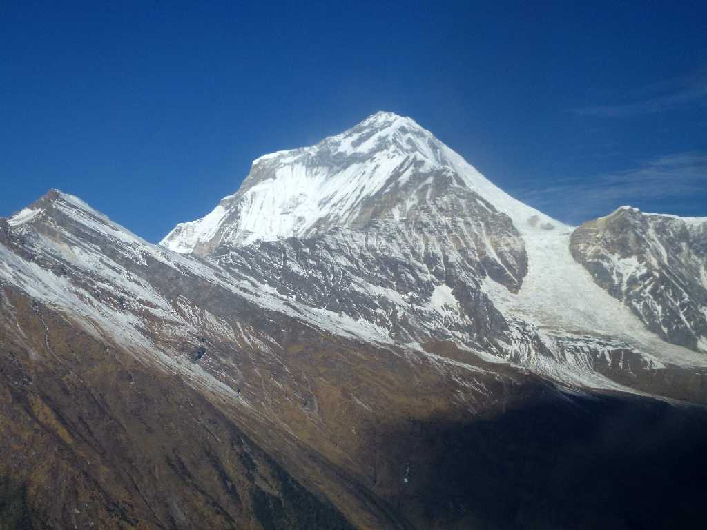
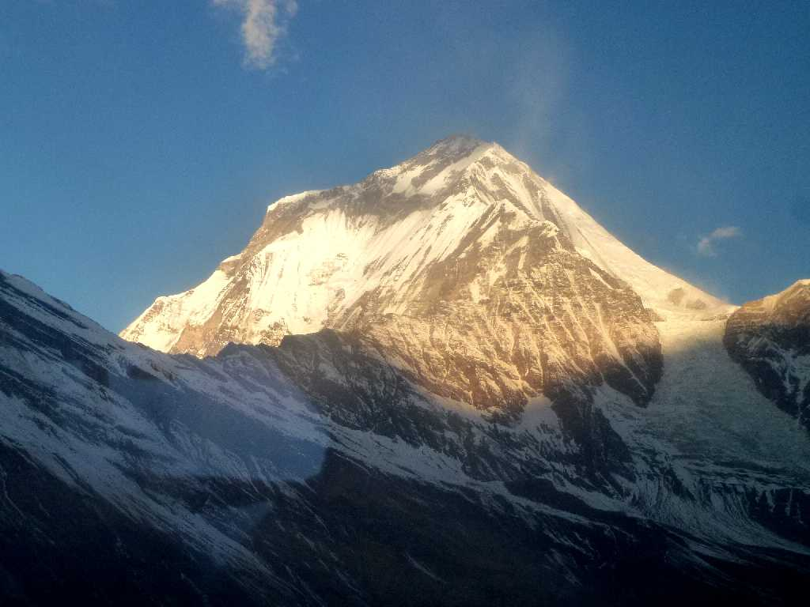
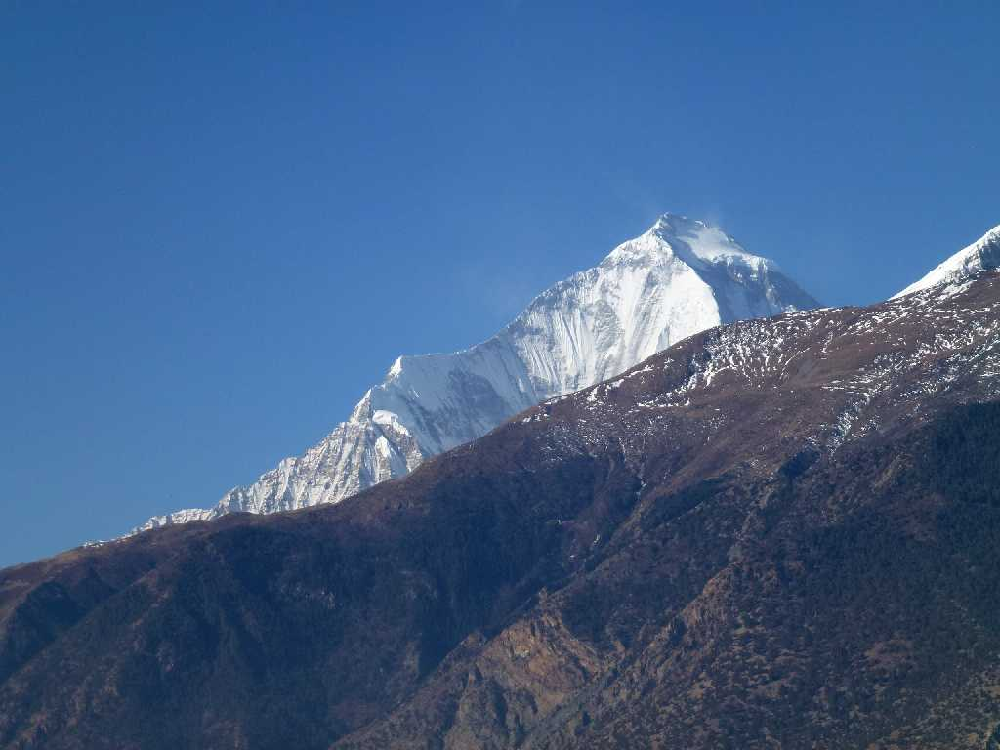
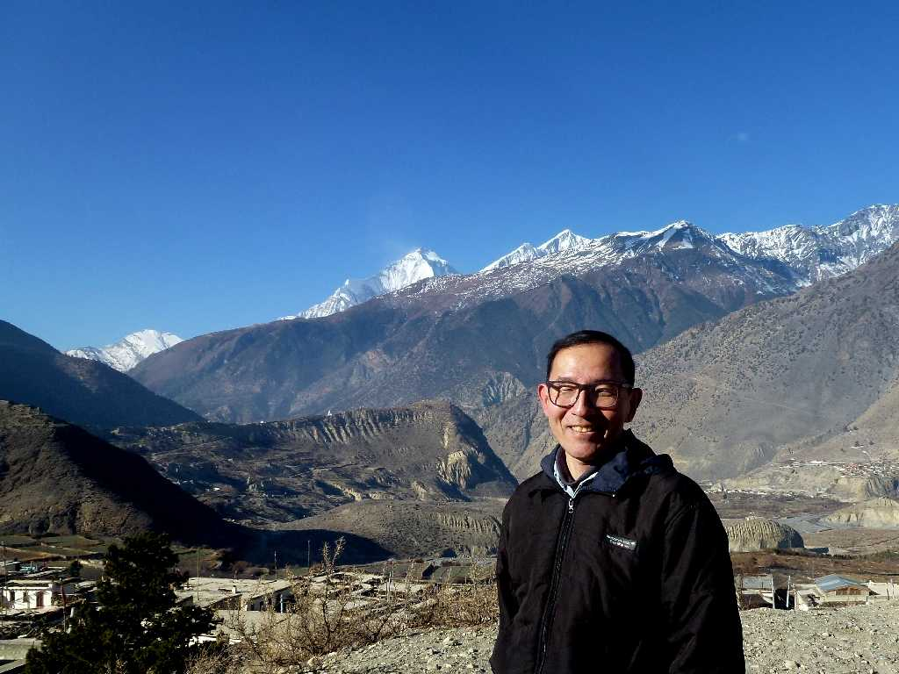

December 29 2012 Mt. Dhaulagiri Flight from Jomsom to Pokhara
世界第七番目高峰 ８,１６７ｍ ダウラギリ山 ダウラギリはサンスクリット語で白い山を意味する 初登頂１９６０年５月１３日スイス・オーストリア隊

December 27 2012 Mt. Dhaulagiri by the morning sun Flight from Pokhara to Jomsom
朝日に映えるダウラギリ

Peak Mt. Dhaulagiri Thini Village Jomsom

December 28 2012 Mt. Dhaulagiri Thini Village Jomsom